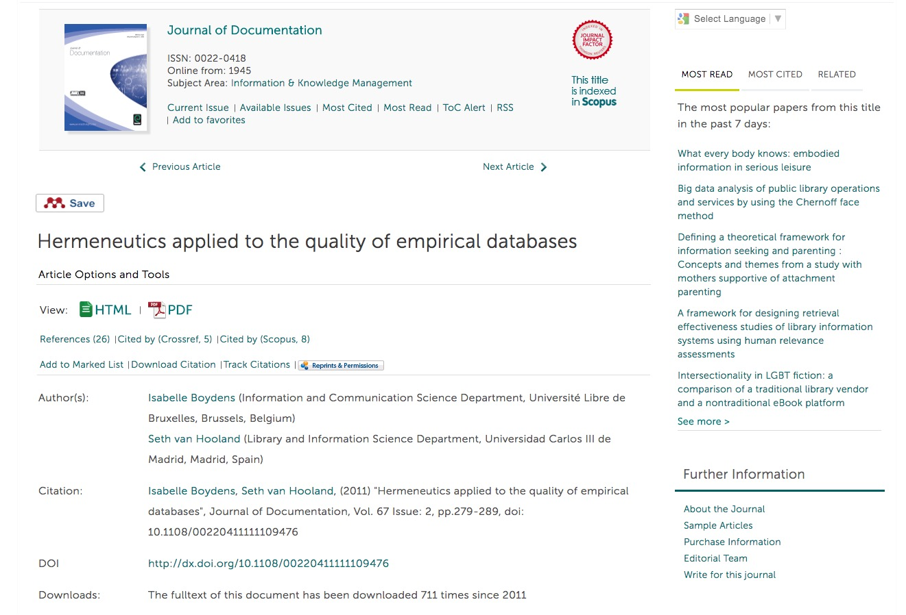

Isabelle Boydens reused Fernand Braudel’s stratified time concept as a
hermeneutical approach to audit the quality of social security databases
Implications of living in an Empirical World
The work of Boydens demonstrates we can not assert a direct correspondance between the empirical, ever-changing world
and the metadata and database schema representing it
Defining data quality in a deterministic manner (e.g. MIT Total Data Quality Program)
makes no sense for empirical application domains
Stratified time applied on social security databases by Boydens
Long term
Evolution of policies and legislation
Intermediate term
Evolution of technologies and standards
Short term
Evolution of the objects the database documents

From theory to practice…
Change is a fundamental notion to deal with…
Boydens underlined that we should not ask “Are the metadata correct?”
but “How do they evolve through time?”
Incorporate tools which help to monitor change
If values do not correspond to the schema, the schema itself may have
to be questioned
Practice of data-profiling helps to develop data auditing skills
Getting to grips with data profiling
The use of analytical techniques to discover the true structure, content
and quality of a collection of data.
Encoding in one field of values which should be split out over multiple fields,
due to:
repeating values
different realities addressed by a generic field
Impacts search and retrieval but also limits data analysis and cleaning
Self-assessment 1
Why is data quality so relevant in a Linked Data context?
The closed-world assumption of the Linked Data paradigm limits the amount of data available.
No, Linked Data is based on the open world assumption, implying that no one at a certain moment knows exactly what type of data are available and the type of constraints they respect.
Linked Data holds the potential danger of introducing erroneous and conflicting data.
Yes, without specific efforts to clean original data sources and ensuring standardised methods and tools to evaluate and compare data set published as Linked Data, the issue of data quality might seriously undermine the potential of Linked Data for libraries.
The introduction of Linked Data will boost the quality of library catalogs.
It depends! Using data from very diverse and heterogeneous sources might seriously undermine the quality of catalogs.
Self-assessment 2
Why is it important to distinguish deterministic from empirical data when talking about metadata quality?
Contrary to deterministic data, there exist no formal theories to validate empirical data
Yes! For deterministic data there are fixed theories which no longer evolve, such as is the case with algebra. 1 + 1 will always equal 2.
There are more issues with deterministic data.
No, irrelevant answer.
Because empirical data can not be cleaned.
No, it is not because we can not establish a direct correspondence between the observable and the data that one can not identify errors and rectify them.
Self-assessment 3
What is field overloading and why is it problematic?
The issue rises when you go beyond the number of characters which may be encoded in a field.
No! The length of an entry can definitively be an interesting data quality indicator, but field overloading is not linked to the length of an entry.
This issue mainly rises when you transfer data from a flat file to a database.
No, it tends to be the other way around. Moving from a well-structured database, with clear definitions of fields, to a flat file might result in packing together related but different (e.g. surname and family name) fields.
Field overloading occurs when related data are put together in the same field.
Yes, this lowers the possibilities to clearly define encoding constraints and structured search.
Self-assessment 4
Why is it important to think about how we communicate about absent values?
In order to save space.
No, this is not a relevant answer.
In order to avoid them at all times.
No! Both for conceptual and operational reasons, it is impossible to avoid empty fields. The important aspect is to document the reason behind the absence of a value.
An empty field can be there for a large variety of reasons. Knowing the reason can be important in order to know how to interpret the absence.
Yes! A value might not be known or not applicable, or there simply might not be enough resources to fill it in.


 Except where otherwise noted, the content of these slides is licensed under a Creative Commons Attribution 4.0 International License.
Except where otherwise noted, the content of these slides is licensed under a Creative Commons Attribution 4.0 International License.
![[Police]](images/police.jpg) ©2009
©2009 {kind=link}